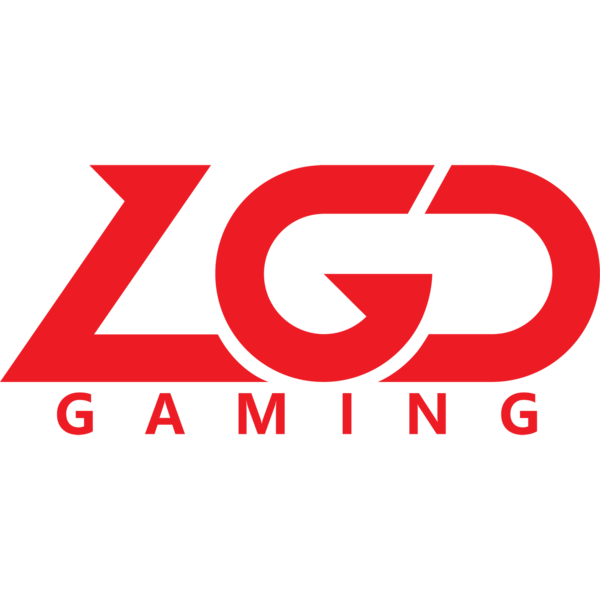
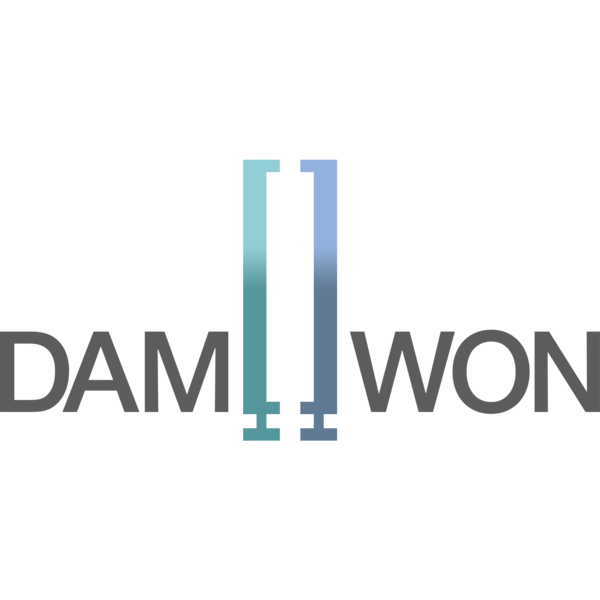

Músicas
Times
Músicas
Times
Índice
Formato do mundial de Lol
Atualmente o mundial de League of Legends é disputado por 22 times e é subdividido em 3 partes: Os play-ins, fase de grupos e fase eliminatória. Vamos falar de cada uma delas separadamente para entendermos melhor como funciona cada uma delas. Todos os 22 times que disputarão o mundial de League of Legends 2020
Play-in - 25 a 30 de setembro
O mundial começa no play-in que é formado por 10 times. Esses times são constituídos por:
- Seed1 Brasil (CBLOL)
- Seed1 Japão (LJL)
- Seed1 Oceania (OPL)
- Seed1 Comunidade dos Estados Independentes (LCL)
- Seed1 Latinoamérica (LLA)
- Seed1 Turquia (TCL)
- Seed2 Sudeste Asiático (PCS)
- Seed3 América do Norte (LCS)
- Seed4 China (LPL) 
- Seed4 Europa(LEC)


- Pote 1: LGD Gaming(seed4 LPL), MAD Lions(seed4 LEC), Team Liquid (seed3 LCS) e PSG Talon(seed2 PCS).
- Pote 2: INTZ(seed1 CBLOL), Rainbow7(seed1 LLA), Unicorns of Love(seed1 LCL), SuperMassive(seed1 TCL), V3 Esports(seed1 LJL) e Legacy Esports(seed1 OPL).
Fase de Grupos - 3 a 6 de outubro; 8 a 11 de outubro
A fase de grupos é constituída por 16 times, as 4 equipes que se classificaram do play-in mais 12 outras equipes, são elas:
- Seed1 China (LPL)
- Seed1 Europa (LEC)
- Seed1 Coreia (LCK) 
- Seed1 America do Norte (LCS)
- Seed2 China (LPL)
- Seed2 Europa (LEC)
- Seed2 Coreia (LCK)
- Seed2 America do Norte (LCS)
- Seed3 China (LPL)
- Seed3 Europa (LEC)
- Seed3 Coreia (LCK)
- Seed1 Sudeste Asiático (PCS)


Esses 12 times são sorteados em 4 grupos (o sorteio da fase de grupos é feito juntamente com o sorteio do play-in, pois esses 12 times citados acima já estão classificados automaticamente para a fase de grupos e não precisam disputar o play-in), e os potes do sorteio foram :
- Pote 1: Top Esports (seed1 LPL), G2 Esports (seed1 LEC), DAMWON Gaming (seed1 LCK) e Team SoloMid (seed1 LCS)
- Pote 2: JD Gaming (seed2 LPL), Fnatic (seed2 LEC), DRX (seed2 LCK) e FlyQuest (seed2 LCS)
- Pote 3: Suning (seed3 LPL), Rogue (seed3 LEC), Gen.G (seed3 LCK) e Machi Esports (seed1 PCS)
Cada equipe de cada pote será sorteada para um determinado grupo e os times do pote 1 são cabeças de chave, ou seja, cada um vai para um grupo diferente. Porém, uma condição deve ser respeitada: não pode haver dois times de uma mesma região em um mesmo grupo(e isso incluí os times que chegarão do play-in).
Por exemplo: caso um grupo seja sorteado com G2 Esports(seed1 LEC), Machi Esports(seed1 PCS), FlyQuest(seed2 LCS) e o time da MAD Lions(seed4 LEC) passe pelo play-in e entre nesse grupo, ele será realocado para o próximo grupo. Grupos já sorteados com os times do play-in
Após os times do play-in chegarem na fase de grupos, ela acontecerá de forma semelhante ao play-in, as partidas são no formato melhor de 1 (MD1), mas ao invés de cada time jogar apenas um jogo contra os times do mesmo grupo, serão jogados 2 jogos. Após todos os jogos, somente os dois primeiros times dos 4 grupos se classificarão pra a fase eliminatória.
Fase eliminatória - 15 a 18 de outubro; 24 e 25 de outubro; 31 de outubro
Após a fase de grupos, restarão apenas 8 times e esses times serão sorteados para formarem as quartas de finais que acontecerão entre o período de 15 a 18 de outubro. Durante a fase eliminatória, todos os confrontos são do estilo melhor de 5 (MD5). Após as quartas de finais, acontecerão as semifinais que serão transmitidas nos dias 24 e 25 de outubro, e por último, a GRANDE FINAL, que acontecerá dia 31 de outubro no Estádio Pudong, na China. Fase eliminatória do mundial 2020
Situação Atual
Para verificar a situação atual do mundial, visite o site oficial da riot com a tabela em tempo real: